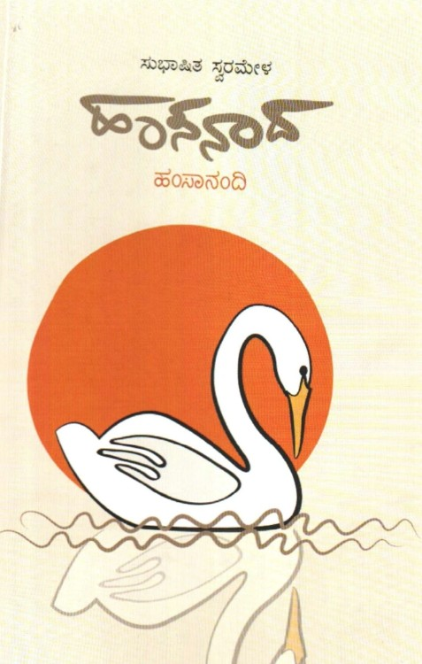
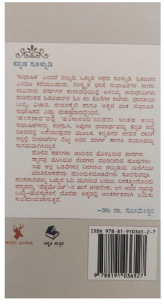

A curated anthology of reflective verses and compositions grounded in the spiritual traditions of India. This collection explores the nuances of devotion and philosophical inquiry through classical metric structures.